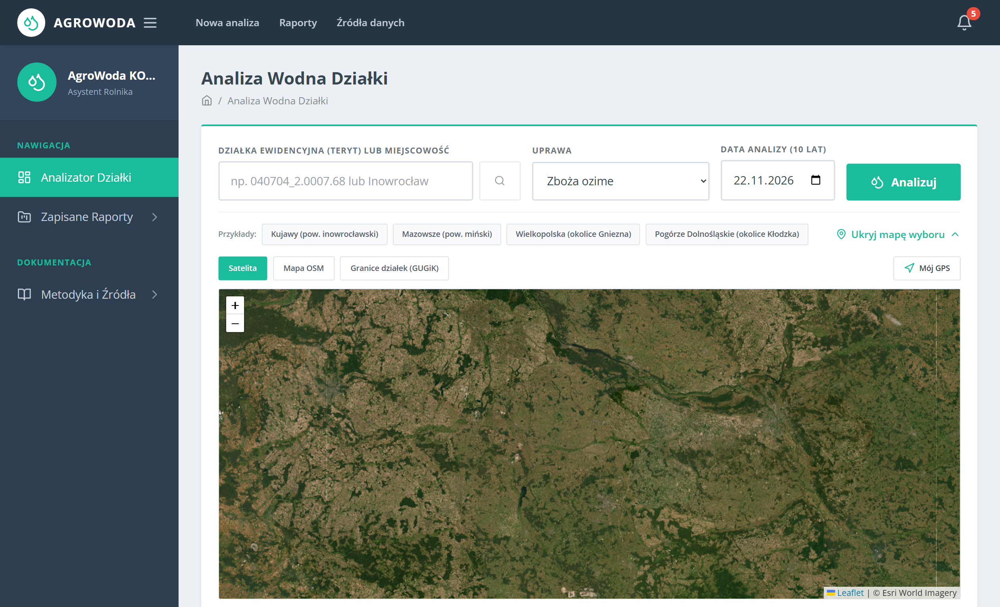
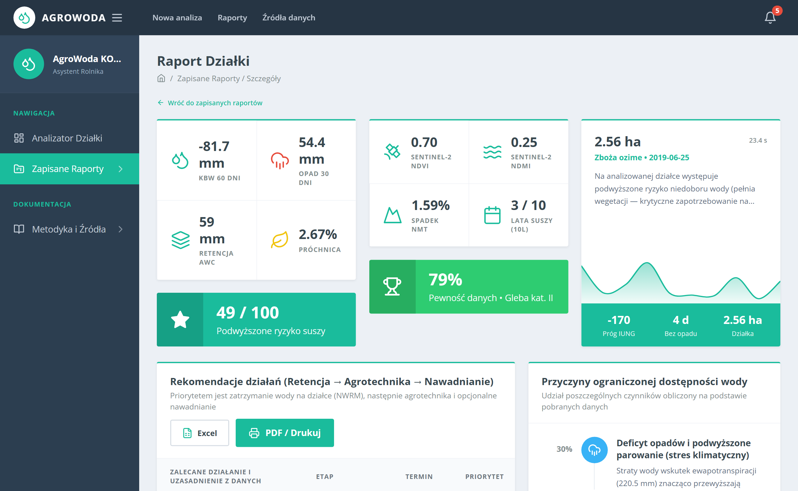
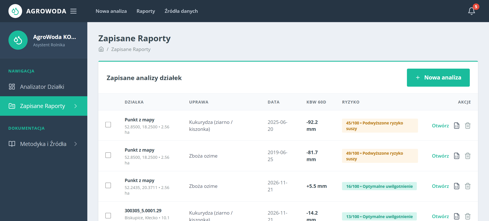

8.2 Plan skalowania krajowego i szacunkowe koszty infrastruktury19
Załączniki20
Załącznik A: Najważniejsze punkty końcowe REST API20
Załącznik B: Kluczowe parametry i progi obliczeniowe systemu20
Załącznik C: Bibliografia naukowa21
1.Wprowadzenie
1.1 Cel dokumentu
Dokument opisuje system AgroWoda KOWR — cyfrowego asystenta gospodarowania wodą w rolnictwie,
opracowanego w ramach wyzwania konkursowego Krajowego Ośrodka Wsparcia Rolnictwa na hackathonie
HackNation 2026. Wyjaśnia, w jaki sposób system pobiera otwarte dane przestrzenne, satelitarne,
meteorologiczne (z 10 lat), glebowe i hydrologiczne, jakie obliczenia naukowe wykonuje oraz jak przekształca je w
proste, uzasadnione liczbami rekomendacje dotyczące retencji wody, agrotechniki i racjonalnego nawadniania dla
dowolnej działki ewidencyjnej w Polsce.
Wszystkie wzory, wagi, progi suszowe oraz parametry przedstawione w niniejszym dokumencie pochodzą bezpośrednio z
kodu źródłowego działającego prototypu, a załączone zrzuty ekranu prezentują rzeczywiste działanie aplikacji na
danych pobranych na żywo z publicznych usług API. Dokument spełnia pełny zakres wymogów formalnych i technicznych
określonych w opisie zadania konkursowego KOWR (rozdziały 3–7).
1.2 Problem operacyjny i susza rolnicza w Polsce
Polska należy do krajów europejskich o jednych z najniższych zasobów wód powierzchniowych na mieszkańca oraz niskim
poziomie retencji krajobrazowej i glebowej. Zmiany klimatu potęgują zmienność warunków hydrometeorologicznych:
długotrwałe okresy bezopadowe i fale upałów przeplatają się z intensywnymi opadami nawalnymi (≥ 20 mm/dobę),
które zamiast wsiąkać w profil glebowy, spływają powierzchniowo poza pole i zasilają szybki odpływ rowami
melioracyjnymi.
Choć publiczne instytucje (GUGiK, IMGW-PIB, IUNG-PIB, ESA/Copernicus, NASA, ISRIC) udostępniają bezpłatnie ogromne
zasoby danych środowiskowych, są one rozproszone w niekompatybilnych serwisach (WFS/WMS, STAC GeoTIFF, reanalizy
klimatyczne, bazy glebowe) i wymagają zaawansowanej wiedzy GIS oraz hydrologicznej. Przeciętny rolnik nie dysponuje
narzędziem, które po wpisaniu numeru działki albo kliknięciu pola na mapie odpowie w kilkanaście sekund na trzy
praktyczne pytania: jaki jest stan wody na mojej działce dziś i na przestrzeni ostatnich 10 lat?,
dlaczego wody brakuje? oraz jakie konkretne zabiegi retencyjne i agrotechniczne przyniosą największy efekt w tej lokalizacji?
1.3 Użytkownicy systemu i zasada braku barier
Głównym użytkownikiem systemu jest rolnik prowadzący gospodarstwo obejmujące jedną lub wiele działek ewidencyjnych,
który nie musi znać systemów GIS, teledetekcji ani hydrologii. Drugą grupą są doradcy rolniczy (ODR) oraz instytucje
wspierające retencję (KOWR). W ścisłej zgodności z wymogami §5.4 i §5.6 zadania konkursowego system realizuje zasadę
zerowej bariery wejścia:
Brak rejestracji, logowania i danych osobowych — narzędzie działa natychmiast po otwarciu w przeglądarce internetowej (Chrome, Edge, Firefox, Safari, Opera) w systemie Windows i na urządzeniach mobilnych.
Brak opłat i specjalistycznego oprogramowania — wszystkie źródła danych i komponenty mają licencje otwarte i bezpłatne.
Prostota interfejsu (3 kroki) — wskazanie działki (TERYT / wyszukiwarka miejscowości / kliknięcie na mapie) → wybór uprawy i daty (ostatnie 10 lat) → kliknięcie przycisku Analizuj.
2.Koncepcja rozwiązania
2.1 Dane wskazują przyczynę, retencja jest priorytetem, rolnik decyduje
AgroWoda KOWR nie ogranicza się do pokazania samej mapy suszy ani nie wyświetla gotowych, jednakowych porad.
Każda analiza rozpoczyna się od wieloźródłowego rozpoznania lokalnego bilansu wodnego, gleby, rzeźby terenu,
kondycji roślinności oraz otoczenia hydrograficznego. Dopiero na tej podstawie deterministyczny, w pełni wyjaśnialny
silnik hydro-agronomiczny wylicza przyczyny niedoboru i dobiera rekomendacje opatrzone konkretnym uzasadnieniem
liczbowym z danych (np. dokładnym spadkiem stoku z NMT 1 m, odległością do najbliższego rowu melioracyjnego czy
zawartością próchnicy i retencją AWC z SoilGrids).
Kluczowym założeniem projektowym jest transparentność i brak pozornej precyzji: jeżeli dowolne źródło (np.
zobrazowanie Sentinel-2 z powodu długotrwałego zachmurzenia albo serwer Overpass OSM) nie dostarczy danych dla
wybranej działki i daty, system komunikuje ten fakt wprost w sekcji ograniczeń raportu oraz obniża wskaźnik pewności
analizy.
2.2 Logiczna sekwencja analizy KOWR (Etapy 1 → 5)
Zgodnie z wytycznymi naukowymi wyzwania KOWR (załącznik Podstawy naukowe) aplikacja wymusza ścisłą,
przyczynowo-skutkową kolejność wnioskowania. Rekomendacje retencyjne i nawodnieniowe nie mogą powstać bez
uprzedniej diagnozy bieżącego oraz 10-letniego bilansu wodnego i identyfikacji źródeł problemu.
Rys. 1. Łańcuch przepływu informacji i ścisła sekwencja decyzyjna w systemie AgroWoda KOWR.
2.3 Zasada „Retain Water Where It Falls” (NWRM UE)
Zgodnie z unijnymi wytycznymi Natural Water Retention Measures (NWRM) oraz literaturą FAO (2019),
nawadnianie nie powinno być pierwszym ani jedynym narzędziem walki z suszą — szczególnie w kraju o ograniczonych
zasobach wodnych. Dlatego AgroWoda zawsze w pierwszej kolejności generuje dopasowane do działki zalecenia
retencji krajobrazowej (zastawki na wykrytych rowach melioracyjnych, niecki infiltracyjne w
najniższym punkcie NMT, pasy wiatrochronne i strefy buforowe) oraz retencji glebowej (zwiększanie
zawartości próchnicy zgodnie z inicjatywą Soil Carbon 4 per mille, międzyplony, mulczowanie resztek
pożniwnych). Dopiero w Etapie 5, jeśli bieżący bilans i prognoza 7-dniowa potwierdzają potrzebę interwencji w
okresie wegetacji, system wylicza bezpieczną dawkę polewową FAO-56.
3.Architektura systemu
3.1 Warstwy systemu i integracja 5 kategorii otwartych danych
System składa się z lekkiej aplikacji webowej w przeglądarce rolnika oraz serwera obliczeniowego Node.js/TypeScript,
który w jednym równoległym przebiegu (Promise.all) pobiera, ujednolica i buforuje dane ze wszystkich
pięciu wymaganych kategorii źródeł publicznych. Dzięki przetwarzaniu równoległemu i strumieniowemu odczytowi
wyłącznie pikseli działki z chmury (Sentinel-2 COG), typowy czas wygenerowania pełnego raportu wynosi
8–15 sekund — wyraźnie poniżej preferowanego przez Jury progu 30 sekund.
Rys. 2. Architektura warstwowa systemu AgroWoda KOWR i integracja 5 kategorii otwartych źródeł danych.
3.2 Architektura oprogramowania i moduły obliczeniowe
Frontend zbudowano w React 18 z TypeScript, narzędziem Vite oraz Tailwind CSS.
Mapy działek korzystają z biblioteki Leaflet (BSD-2-Clause) z podkładami zdjęć
satelitarnych Esri, OpenStreetMap oraz oficjalnej warstwy katastralnej GUGiK KIEG WMS. Wykresy
(fala bilansu wodnego, 10-letni histogram KBW, kalendarz miesięczny) generowane są jako lekkie wektory SVG, dzięki
czemu idealnie skalują się zarówno na ekranie, jak i w wydruku PDF.
Logika dziedzinowa backendu (Node.js + Express + TypeScript) została ściśle rozdzielona na niezależne usługi:
parcelService.ts — rozpoznawanie działek TERYT i geometrii wielokąta (ULDK, KIEG WMS GetFeatureInfo, GUGiK UUG, transformacja PUWG 1992 EPSG:2180 przez proj4).
elevationService.ts — próbkowanie siatki wysokościowej (GUGiK NMT 1 m / Open-Meteo DEM), dopasowanie płaszczyzny spadku metodą najmniejszych kwadratów, ekspozycja stoku i lokalizacja najniższego punktu działki.
meteoService.ts — 10-letnie dane NASA POWER Agroclimatology, pełny wzór FAO-56 Penman-Monteith ET0, doszywanie ostatnich dni i 7-dniowej prognozy z Open-Meteo oraz najbliższa stacja IMGW-PIB Synop.
satelliteService.ts — wyszukiwanie scen Sentinel-2 L2A w AWS Earth Search STAC, zakresowy odczyt COG przez bibliotekę geotiff, filtrowanie chmur maską SCL, kalibracja odbicia i porównanie r/r.
soilService.ts — pobór profilu glebowego 0–60 cm z ISRIC SoilGrids, równania pedotransferowe Saxton & Rawls (2006) oraz klasyfikacja do kategorii podatności IUNG-PIB I–IV.
hydrologyService.ts — najbliższe wodowskazy IMGW-PIB oraz wieloserwerowe zapytania Overpass OSM (rowy melioracyjne, cieki, oczka wodne, mokradła, zadrzewienia śródpolne).
waterEngine.ts — deterministyczny silnik decyzyjny realizujący 5-etapową sekwencję KOWR oraz kalkulator niepewności i źródeł danych.
excelReportService.ts i storageService.ts — eksport 5-arkuszowych raportów ExcelJS (.xlsx) oraz pamięć trwała SQLite z buforowaniem TTL.
3.3 Model danych, pamięć podręczna SQLite i zapisane raporty
Warstwa trwałości (storageService.ts) wykorzystuje wbudowany w Node.js 22 moduł node:sqlite
(z automatycznym fallbackiem do atomowego pliku JSON na starszych wersjach Node), co całkowicie eliminuje
problemy z kompilacją natywnych dodatków C++ (node-gyp) w systemie Windows. Baza przechowuje
dwie tabele:
reports — zapisane pełne raporty gospodarstwa (metadane indeksowane + pełny dokument JSON analizy), umożliwiające natychmiastowy powrót do raportu, ponowny wydruk PDF, eksport Excel oraz porównanie do 4 działek obok siebie.
api_cache — bufor z czasem wygasania (TTL) dla zapytań do zewnętrznych API: 30 dni dla gleby i NMT, 14 dni dla granic działek, 24 h dla scen Sentinel-2, 12 h dla archiwum 10-letniego meteo oraz 30 min dla odczytów IMGW-PIB.
4.Przebieg analizy i metodyka naukowa krok po kroku
Rolnik wskazuje działkę na jeden z trzech sposobów: wpisuje pełny identyfikator TERYT (np.
040704_2.0007.68), wyszukuje miejscowość lub gminę (przez oficjalną Usługę Uniwersalnego Geokodowania
GUGiK UUG) albo klika bezpośrednio na pole na mapie. Na podstawie pobranego wielokąta WKT system
oblicza dokładną powierzchnię działki (ha), obwód (m), środek ciężkości (centroid) i prostokąt ograniczający (bbox).
W przypadku chwilowego ograniczenia częstotliwości po stronie ULDK system automatycznie przełącza się na zapytanie
KIEG WMS GetFeatureInfo, pozyskuje TERYT i ponawia pobór geometrii (z obsługą układów
EPSG:4326 i EPSG:2180).

Rys. 3. Ekran główny AgroWoda KOWR: wyszukiwarka TERYT/miejscowości, wybór uprawy i daty (10 lat) oraz interaktywna mapa satelitarna z przełącznikiem granic działek GUGiK.
Katalog upraw (backend/src/data/crops.ts) obejmuje 12 głównych grup upraw w Polsce
zgodnie z metodyką Systemu Monitoringu Suszy Rolniczej IUNG-PIB oraz wytycznymi FAO-56. Każda uprawa posiada
krzywą współczynnika uprawowego Kc (faza początkowa, wzrostu, maksimum wegetacji, dojrzewania i spoczynku),
głębokość systemu korzeniowego Zr, współczynnik dopuszczalnego wyczerpania p oraz krytyczne progi 60-dniowego
KBW dla czterech kategorii gleb.
Dla współrzędnych środka działki system pobiera 10 pełnych lat dziennych obserwacji meteorologicznych
kończących się na wybranej dacie analizy (analysisDate) z bazy NASA POWER Agroclimatology
(temperatura minimalna, maksymalna i średnia, opad skorygowany PRECTOTCORR, promieniowanie słoneczne
ALLSKY_SFC_SW_DWN, wilgotność względna RH2M, prędkość wiatru na wysokości 2 m
WS2M oraz wskaźniki uwilgotnienia gleby GWETTOP i GWETROOT). Dla dat
bieżących (z ostatnich 85 dni) system automatycznie doszywa najświeższe dni oraz 7-dniową prognozę opadów i
ewapotranspiracji z Open-Meteo, niwelując 2–4-dniowe opóźnienie publikacji satelitarnej NASA.
Dobowa ewapotranspiracja wskaźnikowa ET0 wyznaczana jest pełnym równaniem FAO-56 Penman-Monteith
(Allen, Pereira, Smith, 1998/2025), a następnie przeliczana na zapotrzebowanie uprawy ETc i 60-dniowy Klimatyczny
Bilans Wodny zgodny z IUNG-PIB:
Dodatkowo dla całego 10-lecia wyznaczane są: (1) seria roczna KBW60 dokładnie dla tego samego okna
kalendarzowego w każdym z 10 lat (co pozwala policzyć anomalię z-score oraz częstość przekraczania progu IUNG),
(2) profil miesięczny marzec–październik wskazujący miesiące szczytowego ryzyka na danej działce (np. maj–lipiec),
(3) długość bieżącego i najdłuższego w 60 dniach ciągu bezopadowego (< 1 mm/d) oraz (4) udział opadów nawalnych
(≥ 20 mm/d), które zwiększają ryzyko spływu powierzchniowego.
System odpytuje bezpłatny katalog AWS Earth Search STAC API (sentinel-2-l2a) o
zobrazowania pokrywające prostokąt działki w oknie 60 dni przed datą analizy (oraz scenę referencyjną z analogicznego
okresu rok wcześniej). Za pomocą biblioteki geotiff pobierane są metodą HTTP Range Request
wyłącznie piksele pokrywające działkę z czterech pasm Cloud-Optimized GeoTIFF: B04 (Red, 10 m),
B08 (NIR, 10 m), B11 (SWIR1, 20 m) oraz SCL (Scene Classification Layer, 20 m).
NDVI = (B08_NIR − B04_Red) / (B08_NIR + B04_Red) # kondycja i gęstość biomasy
NDMI = (B08_NIR − B11_SWIR1) / (B08_NIR + B11_SWIR1) # zawartość wody w liściach
ΔNDVI = NDVI_bieżący − NDVI_rok_poprzedni # anomalia rok do roku
Z obliczeń odrzucane są piksele sklasyfikowane przez warstwę SCL jako chmury, cienie chmur, śnieg i woda (pozostają
wyłącznie klasy 4 — roślinność i 5 — gleba odkryta). Jeżeli udział ważnych pikseli na
działce jest mniejszy niż 25%, scena jest odrzucana i sprawdzany jest kolejny kandydat.
Interpretacja uwzględniająca specyfikę uprawy (wymóg KOWR pkt 3.2.1a): System wiąże wartości NDVI i
NDMI z fazą fenologiczną wybranej uprawy w dniu wykonania zdjęcia. Niskie NDVI w listopadzie lub po żniwach zbóż
ozimych jest rozpoznawane jako naturalna gleba odkryta / ściernisko (nie generuje fałszywego alarmu suszowego),
natomiast spadek NDMI i NDVI w fazie kłoszenia zbóż lub kwitnienia kukurydzy podnosi ocenę stresu wodnego.
4.4 Krok 4: Gleba (SoilGrids, Saxton & Rawls 2006), rzeźba terenu (NMT 1 m) i hydrologia
Właściwości gleby pobierane są z ISRIC SoilGrids v2.0 (rozdzielczość 250 m) jako średnia ważona
głębokością z czterech poziomów (0–5, 5–15, 15–30, 30–60 cm): udział piasku (S), pyłu, iłu (C), zawartość węgla
organicznego (SOC przeliczany na zawartość próchnicy współczynnikiem Van Bemmelena 1,724) oraz gęstość
objętościowa. Zastosowanie równań pedotransferowych Saxton & Rawls (2006) pozwala wyznaczyć
pojemność polową (θFC), punkt trwałego więdnięcia (θPWP), przewodnictwo nasycone (Ksat)
oraz retencję użyteczną AWC w warstwie 0–60 cm i w strefie korzeniowej uprawy (Zr):
Ukształtowanie terenu (NMT): Wewnątrz obrysu działki generowana jest siatka do 9 punktów,
transformowana do układu PUWG 1992 (EPSG:2180) i odpytywana jednym zbiorczym wywołaniem GUGiK NMT 1 m
(GetHByPointList), z automatycznym fallbackiem do Open-Meteo Elevation. Do wysokości
dopasowywana jest płaszczyzna z(x, y) = ax + by + c metodą najmniejszych kwadratów, wyznaczając średni i maksymalny
spadek (%), ekspozycję stoku (N–NW), wektor kierunku spływu oraz współrzędne najniższego punktu działki
(wskazywanego na mapie jako lokalizacja mikroretencji).
Hydrologia i otoczenie krajobrazowe: Moduł hydrologyService.ts pobiera najbliższe
wodowskazy z IMGW-PIB Hydro (wyłącznie dla dat bieżących) oraz analizuje otoczenie 1–1,5 km w
OpenStreetMap Overpass pod kątem rowów melioracyjnych (ditch, drain),
cieków, oczek wodnych, mokradeł oraz zadrzewień śródpolnych.
4.5 Krok 5: Zintegrowana ocena stanu wilgotności i identyfikacja przyczyn (Etapy 1–2)
Zintegrowany Wskaźnik Ryzyka Suszy (0–100) łączy znormalizowane składowe: bieżący 60-dniowy bilans
KBW60 względem progu IUNG, krótkoterminowy bilans uprawy i ciągi bezopadowe (30 dni), uwilgotnienie strefy
korzeniowej, sygnał satelitarny Sentinel-2 (aktywny w okresie wegetacji) oraz podatność glebową i ryzyko spływu
stokowego. Osobno liczony jest wskaźnik 10-letniej podatności wieloletniej (częstość lat z suszą,
najgorszy średni miesiąc, średni opad roczny i kategoria gleby) — rozróżniając bieżący epizod suszy od trwałego
ryzyka lokalnego.
W Etapie 2 każda z pięciu kategorii przyczyn (klimat, gleba, topografia, krajobraz, uprawa)
otrzymuje obliczoną wagę znormalizowaną do 100% udziału oraz zestaw konkretnych dowodów liczbowych.

Rys. 4. Dashboard wyników AgroWoda KOWR dla działki na Kujawach (susza historyczna 2019-06-25, zboża ozime): karty KPI, ocena ryzyka, wykres bilansu, tabela rekomendacji oraz oś przyczyn deficytu.
4.6 Krok 6: Generowanie rekomendacji (Etapy 3–5)
Wszystkie rekomendacje powstają dynamicznie na podstawie spełnionych warunków liczbowych z Etapów 1 i 2:
Etap 3A — Retencja krajobrazowa (NWRM): (1) zastawki spowalniające odpływ na rowie melioracyjnym — gdy wykryto rów w promieniu 750 m; (2) niecka infiltracyjna / mikrozbiornik w najniższym punkcie działki — gdy deniwelacja NMT ≥ 1,0 m, spadek ≥ 1,5% lub ≥ 2 dni/rok z opadem nawalnym; (3) strefa buforowa 5–10 m — gdy w odległości ≤ 600 m istnieje oczko wodne lub mokradło; (4) pasy wiatrochronne — gdy brakuje zadrzewień śródpolnych w buforze 1 km.
Etap 3B — Retencja glebowa: mulczowanie resztek pożniwnych i nawożenie organiczne (wzrost +1% próchnicy = ok. +15–20 mm retencji użytecznej) oraz międzyplony dobrane indywidualnie do gatunku uprawy głównej.
Etap 4 — Agrotechnika: uprawa poprzecznostokowa (generowana warunkowo przy spadku NMT ≥ 2% lub lokalnie ≥ 4%), ograniczenie głębokiej orki na rzecz strip-till / uprawy uproszczonej (oszczędność 15–30 mm wody w warstwie ornej), płytkie zerwanie ścierniska po żniwach oraz dobór bardziej odpornych odmian przy wysokiej częstości susz w 10-leciu.
Etap 5 — Nawadnianie (opcjonalne): cztery stany decyzji — Niezalecane (poza sezonem lub ryzyko < 42), Wstrzymaj — prognozowany opad (gdy prognoza 48h ≥ 12 mm), Monitoruj (ryzyko 42–64) oraz Zasadne nawadnianie uzupełniające (ryzyko ≥ 65). Bezpieczna jednorazowa dawka wyliczana jest ze wzoru FAO-56 z ograniczeniem pojemnością gleby, aby wykluczyć wymywanie azotu:
Rys. 5. Sekcja rekomendacji i analizy przyczyn dla działki na Kujawach (2019-06-25): konkretne uzasadnienia liczbowe z NMT i SoilGrids po lewej oraz udział procentowy czterech przyczyn deficytu wody po prawej.
4.7 Krok 7: Transparentność, eksport raportu i porównywarka działek
Każdy wygenerowany raport kończy się tabelą pochodzenia danych (nazwa usługi, zakres czasowy, rozdzielczość,
status pobrania), wyliczonym poziomem pewności analizy (%), ramką jawnych braków danych oraz listą
czynników nieuwzględnionych w modelu (np. drożność drenów podziemnych, poziom wód gruntowych > 1 m, lokalne
burze konwekcyjne). Raport zapisuje się automatycznie w SQLite, a rolnik może go wydrukować / zapisać jako
PDF A4, pobrać jako 5-arkuszowy plik Excel (.xlsx) albo porównać
jednocześnie do 4 działek swojego gospodarstwa w zakładce Zapisane Raporty.
Arkusz Excel (.xlsx)
Zawartość merytoryczna eksportu ExcelJS
1. Podsumowanie
Identyfikacja działki (TERYT, powierzchnia, obwód), ocena bieżąca i 10-letnia, KBW60, gleba, Sentinel-2, NMT i decyzja o nawadnianiu
2. Przyczyny
Znormalizowane udziały procentowe (%) wszystkich 5 kategorii przyczyn oraz konkretne dowody liczbowe
3. Rekomendacje
Pełna tabela działań z podziałem na etapy (Retencja krajobrazowa → glebowa → agrotechnika → nawadnianie), terminy i priorytety
4. Historia 10 lat
Roczne zestawienie KBW60, sum opadów i ewapotranspiracji dla wybranego okna kalendarzowego z 10 lat + profil miesięczny
5. Źródła i niepewność
Pochodzenie i status wszystkich usług API, poziom pewności (%), jawne braki danych oraz czynniki poza modelem

Rys. 6. Zakładka „Zapisane Raporty”: archiwum analiz zapisane w lokalnej bazie SQLite z eksportem do Excela oraz porównywarką priorytetów retencji dla wielu działek gospodarstwa.
5.Źródła danych, stos technologiczny i licencje
5.1 Wykaz źródeł danych: pobór na bieżąco vs buforowanie (TTL cache)
W pełnej zgodności z §4.2 pkt 4–5 i §5.2 zadania konkursowego żadne wyniki analiz ani rekomendacje nie są
przygotowane wcześniej. Wszystkie dane dla analizowanej działki i daty pobierane są na żywo w momencie
zapytania, a jedynym buforowaniem jest pamięć podręczna SQLite (TTL cache) skracająca powtórne zapytania i
chroniąca publiczne API przed przeciążeniem. Wyłącznie stałe współczynniki agronomiczne 12 upraw (tablice FAO-56
Kc, Zr i progi IUNG) stanowią wbudowaną wiedzę dziedzinową w pliku backend/src/data/crops.ts.
Kategoria
Źródło / Interfejs API
Zakres i rozdzielczość
Pobór / TTL Cache
Licencja / Warunki
Przestrzenne (EGiB)
GUGiK ULDK, KIEG WMS, GUGiK UUG
Granice działek całej Polski (dokładność katastralna)
Na bieżąco (cache 14 dni)
Otwarte dane publiczne GUGiK (ustawa PGiK)
Przestrzenne (Teren)
GUGiK NMT (fallback: Open-Meteo Elevation)
Siatka 9 pkt / działkę; 1 m (Polska) lub 30 m (DEM)
Na bieżąco (cache 30 dni)
Dane publiczne GUGiK / CC-BY 4.0
Meteorologiczne
NASA POWER AG, Open-Meteo Forecast, IMGW Synop
10 lat dobowo (P, T, Rs, RH, u2) + prognoza 7d
Na bieżąco (12h / 2h / 30 min)
NASA Public Domain / CC-BY 4.0 / IMGW Publiczne
Satelitarne
Copernicus Sentinel-2 L2A (AWS Earth Search STAC)
10 m (B04/B08) i 20 m (B11/SCL), okno 60d + rok poprz.
Na bieżąco COG Range (24h)
Copernicus Free, Full and Open Data Policy
Glebowe
ISRIC SoilGrids v2.0 (REST API)
Profil 0–60 cm (4 warstwy), 250 m
Na bieżąco (cache 30 dni)
CC-BY 4.0 (ISRIC World Soil Information)
Hydrologiczne
IMGW-PIB Hydro, OpenStreetMap Overpass
Wodowskazy IMGW + sieć rowów/cieków/oczek (1,5 km)
Na bieżąco (30 min / 7 dni)
Dane Publiczne IMGW / ODbL (OSM)
5.2 Stos programowy, biblioteki otwarte oraz zakres użycia narzędzi AI
Wszystkie wykorzystane komponenty mają otwarte, liberalne licencje OSI (MIT, BSD-2-Clause, ISC, Apache-2.0) umożliwiające nieograniczone wykorzystanie i
przeniesienie praw zgodnie z §2 ust. 10 i §5 Regulaminu zadania konkursowego. Stałe tablice naukowe 12 upraw (backend/src/data/crops.ts) opracowano na podstawie publikacji FAO-56 (2025) i IUNG-PIB w dniu 2026-11-21.
Baza raportów i TTL cache, eksport 5-arkuszowy XLSX, Swagger UI
MIT
Testy
Jest, ts-jest, Supertest
Testy jednostkowe wzorów naukowych i testy integracyjne API
MIT
Zakres zastosowania sztucznej inteligencji (wymóg KOWR §4.2 pkt 6 i §5.1): W czasie działania
aplikacji silnik decyzyjny nie korzysta z zewnętrznych płatnych modeli LLM — obliczenia i
rekomendacje są w 100% deterministyczne, oparte na literaturze naukowej (FAO-56, IUNG, Saxton & Rawls, NWRM),
powtarzalne i wolne od halucynacji oraz kosztów tokenów. Narzędzia AI (Google Antigravity / Gemini) zostały
wykorzystane wyłącznie na etapie projektowania, pisania kodu źródłowego, generowania grafiki okładkowej oraz
redakcji dokumentacji, przy pełnej weryfikacji testami automatycznymi i na żywych danych API.
6.Weryfikacja, testy i wyniki na rzeczywistych działkach
6.1 Działanie na żywo, odporność na limity i zabezpieczenia API
W przeciwieństwie do prototypów opartych o zbiory demonstracyjne, w aplikacji AgroWoda każdy z 5 modułów
danych działa w pełni na żywo dla dowolnej działki w Polsce. Podczas testów integracyjnych w warunkach
rzeczywistych (współdzielona sieć wydarzenia) wykryto i rozwiązano trzy krytyczne zagrożenia dla stabilności:
Limit dzienny Open-Meteo Archive (HTTP 429): jako podstawowe 10-letnie źródło meteorologiczne wdrożono bezkluczowe NASA POWER Agroclimatology (odpowiedź ok. 1,9 s za 10 lat dobowych danych), z Open-Meteo Archive jako automatycznym fallbackiem i Open-Meteo Forecast do prognozy 7-dniowej.
Zabezpieczenie strumieniowe przed tarpitem ULDK GUGiK: serwery ULDK przy dużym ruchu potrafią zwracać sztuczną odpowiedź EWKB (>100 MB zaczynającą się od 0101000020). Nasz klient przerywa takie połączenie już w pierwszym pakiecie (~150 ms), ponawia próbę z naprzemiennym układem SRID 4326/2180 oraz posiada niezależny fallback przez KIEG WMS GetFeatureInfo.
Harmonizacja pasm Sentinel-2 L2A (Baseline 04.00): weryfikacja surowych pikseli COG na AWS Earth Search ujawniła, że pliki COG są już zharmonizowane do zakresu DN 0–10000 mimo etykiety offset=-0.1 w metadanych STAC. Wdrożono automatyczną detekcję przesunięcia, uzyskując fizycznie dokładne wartości NDVI i NDMI w całym 10-leciu (2016–2026).
6.2 Walidacja dla rzeczywistych działek i dat historycznych
Działanie prototypu zweryfikowano na żywo m.in. dla rzeczywistych działek rolnych w regionie Kujaw (strefa częstych
susz IUNG) oraz Mazowsza — zarówno dla historycznych lat suszowych (2019, 2025), jak i dla dnia bieżącego.
Podwyższone ryzyko (45/100), priorytet: retencja glebowa i strip-till
Mazowsze (141201_1.0001.6509, 0,26 ha)
Dzień bieżący (listopad) / Ziemniak
+16,6 mm (prognoza 7d: 17,2 mm)
Brak (strefa miejska — zgłoszono jawnie)
Okres poza wegetacją
Optymalne (7/100), nawadnianie niezalecane
6.3 Testy automatyczne (Jest + Supertest)
Zestaw 7 testów automatycznych (backend/src/__tests__/water.test.ts) uruchamianych poleceniem
npm test na bazie w pamięci weryfikuje: (1) poprawność fizyczną FAO-56 Penman-Monteith ET0 dla lata
i zimy w Polsce, (2) różnicowanie gleby piaszczystej Kat. I i gliniastej Kat. IV w modelu Saxton & Rawls,
(3) parsowanie geometrii WKT z ULDK, (4) krzywą fenologiczną Kc, (5) publiczny dostęp bez logowania do
/api/health i /api/crops, (6) pełny cykl POST /api/analyze → zapis
→ eksport .xlsx → usunięcie oraz (7) odrzucanie błędnych dat spoza 10 lat i współrzędnych
spoza Polski.
7.Bezpieczeństwo, prywatność, prawo i ograniczenia
7.1 Cyberbezpieczeństwo i minimalizacja danych (RODO)
Zgodnie z §5.6 zadania konkursowego prototyp nie zbiera, nie przetwarza ani nie przechowuje żadnych danych
osobowych (brak rejestracji, imion, adresów e-mail czy numerów PESEL). Przetwarzane są wyłącznie otwarte
identyfikatory przestrzenne działek oraz publiczne dane środowiskowe. Warstwa API (middleware/security.ts)
implementuje podstawowe mechanizmy cyberbezpieczeństwa:
ograniczanie liczby zapytań (rate limiting per IP: 25 analiz/min, 60 wyszukań/min) chroniące zewnętrzne API,
ścisłą walidację danych wejściowych (zakres geograficzny Polski 48,5–55,2°N i 13,8–24,5°E, zakres dat 10 lat, limit rozmiaru żądania JSON 1 MB, limit strumieniowy 250 KB dla ULDK oraz parametryzowane zapytania SQL bez podatności SQL Injection).
7.2 Ramy prawne (Prawo wodne) i ograniczenia modelu
Każda rekomendacja dotycząca piętrzenia wody w rowach melioracyjnych, budowy zbiornika retencyjnego czy poboru wody
do nawadniania zawiera w raporcie wyraźną adnotację o wymogach ustawy Prawo wodne (zgłoszenie
wodnoprawne dla małych zbiorników do 1000 m² i 3 m głębokości, uzgodnienie ze spółką wodną dla zastawek na
rowach oraz pozwolenie wodnoprawne przy poborze wód > 5 m³/dobę średniorocznie).
Znane ograniczenia techniczne i merytoryczne (§4.2 pkt 8):
Rozdzielczość przestrzenna: siatka meteorologiczna NASA POWER (~50 km) i Open-Meteo (~9 km) nie wychwytuje punktowych letnich burz nad pojedynczym polem; SoilGrids (250 m) jest modelem statystycznym i nie zastępuje analizy laboratoryjnej próchnicy i pH.
Zachmurzenie satelitarne: brak bezchmurnej sceny Sentinel-2 w oknie 60 dni obniża pewność analizy i jest jawnie komunikowany rolnikowi.
Historyczne dane IMGW-PIB: publiczne API IMGW udostępnia wyłącznie bieżące stany wód — w analizach historycznych odczyty te są celowo wyłączane.
Czynniki terenowe poza danymi otwartymi: stan techniczny podziemnych drenów (sączków), poziom wód gruntowych poniżej 1 m, rzeczywista data siewu, obsada i konkretna odmiana uprawy.
8.Uruchomienie prototypu i skalowalność w skali kraju
Prototyp wymaga wyłącznie środowiska Node.js 20 lub 22+ (zalecane Node.js 22 — zero kompilacji C++).
Po pobraniu repozytorium uruchomienie wymaga dwóch poleceń:
# Terminal 1 — Backend API (http://localhost:5000, Swagger UI: /api-docs)
cd backend && copy .env.example .env && npm install && npm run dev
# Terminal 2 — Aplikacja webowa (http://localhost:3000)
cd frontend && npm install && npm run dev
# Weryfikacja testami automatycznymi
cd backend && npm test
8.2 Plan skalowania krajowego i szacunkowe koszty infrastruktury (§5.5)
Prototyp obsługuje dowolną działkę ewidencyjną w Polsce, jednak udostępnienie go jednocześnie dziesiątkom tysięcy
rolników (np. jako moduł portalu KOWR lub eWniosekPlus) wymaga trzech zmian architektonicznych:
Obsługa limitów zewnętrznych API: przeniesienie warstwy cache z lokalnego SQLite do klastra Redis + PostgreSQL/PostGIS, załadowanie lokalnej kopii statycznych zbiorów GUGiK (eksport EGiB Parquet z opendata.geoportal.gov.pl, krajowy NMT 1 m oraz mapa podatności gleb IUNG) — skracając czas odpowiedzi do < 300 ms i całkowicie eliminując limity ULDK/SoilGrids.
Aktualizacja danych i ruch szczytowy: cykliczne zadania wsadowe (nocna aktualizacja dobowych siatek IMGW/ERA5, przeliczanie indeksów Sentinel-2 co 5 dni po przelocie satelity dla siatki obrębów), kolejki zadań (BullMQ) dla analiz całych gospodarstw oraz CDN dla aplikacji frontendowej.
Szacunkowy koszt infrastruktury (50–100 tys. aktywnych rolników/mies.): klaster aplikacyjny + PostGIS + Redis w chmurze UE lub rządowej (Chmura Krajowa) to ok. 3 000–7 000 zł/mies. Wszystkie publiczne źródła danych (GUGiK, Copernicus, IMGW, NASA POWER, SoilGrids, OSM) pozostają w 100% bezpłatne.
Załączniki
Załącznik A: Najważniejsze punkty końcowe REST API
Pełna interaktywna specyfikacja OpenAPI 3.0 jest dostępna po uruchomieniu backendu pod adresem http://localhost:5000/api-docs.
Metoda i ścieżka
Opis działania
Dostęp
GET /api/health
Status serwera oraz tryb warstwy trwałości (node-sqlite / json)
publiczny
GET /api/crops
Katalog 12 upraw z parametrami FAO-56 Kc, Zr i progami IUNG
publiczny
GET /api/parcels/examples
Zweryfikowane przykładowe działki w różnych regionach Polski
publiczny
GET /api/parcels/lookup
Pobranie geometrii działki po TERYT (?id=) lub kliknięciu (?lat=&lng=)
publiczny
GET /api/parcels/search
Wyszukiwanie miejscowości / gminy (GUGiK UUG / Nominatim)
publiczny
POST /api/analyze
Pełna 5-etapowa analiza działki dla dowolnej daty z ostatnich 10 lat
publiczny
GET /api/reports
Lista zapisanych raportów gospodarstwa w bazie SQLite
publiczny
GET /api/reports/:id
Pobranie pełnego zapisanego raportu JSON
publiczny
GET /api/reports/:id/export.xlsx
Eksport 5-arkuszowego raportu ExcelJS (.xlsx)
publiczny
DELETE /api/reports/:id
Usunięcie zapisanego raportu z bazy
publiczny
GET /api/methodology
Zestawienie sekwencji KOWR, źródeł danych i licencji
publiczny
Załącznik B: Kluczowe parametry i progi obliczeniowe systemu
Parametr
Wartość w kodzie
Znaczenie operacyjne
Okno historii meteorologicznej
10 lat (3650+ dni)
Ocena wieloletniej podatności suszowej i normy lokalnej
Okno bilansu KBW
60 dni krocząco
Zgodność z okresami 6-dekadowymi IUNG-PIB
Próg dnia bezopadowego / ulewy
< 1,0 mm / ≥ 20,0 mm/d
Długość ciągów bezopadowych oraz udział opadów nawalnych
Okno wyszukiwania Sentinel-2
60 dni przed datą analizy
Dobór najświeższej bezchmurnej sceny (≥ 25% ważnych pikseli SCL)
Rekomendacje retencji korytowej (zastawki) i stref buforowych
Próg wstrzymania nawadniania
Prognoza 48h ≥ 12 mm
Ochrona przed zbędnym nawadnianiem przed nadchodzącym deszczem
Maks. jednorazowa dawka polewowa
22 / 28 / 35 mm
Ograniczenie przesiąkania wg kategorii gleby (I / II / III–IV)
Zakres geograficzny walidacji
48,5–55,2°N; 13,8–24,5°E
Zabezpieczenie analizy dla terytorium Rzeczypospolitej Polskiej
Limity TTL pamięci podręcznej
30 min – 30 dni
Redukcja obciążenia zewnętrznych API i przyspieszenie zapytań
Limit rozmiaru odpowiedzi ULDK
250 KB + detekcja 0101000020
Natychmiastowa ochrona przed tarpitem GUGiK
Załącznik C: Bibliografia naukowa
Allen, R. G., Pereira, L. S., & Smith, M. (2025). Crop evapotranspiration: Guidelines for computing crop water requirements (FAO Irrigation and Drainage Paper No. 56, Rev. 1). Food and Agriculture Organization of the United Nations.
Doroszewski, A., Kozyra, J., Pudełko, R., Stuczyński, T., Jadczyszyn, J., Koza, P., Łopatka, A., & Wróblewska, E. (2012). Podstawy Systemu Monitoringu Suszy Rolniczej. Instytut Uprawy Nawożenia i Gleboznawstwa – PIB, Puławy.
European Commission (2014). Natural Water Retention Measures Policy Document. Publications Office of the European Union.
European Commission (2015). A Guide to Support the Selection, Design and Implementation of Natural Water Retention Measures in Europe. Publications Office of the European Union.
Food and Agriculture Organization of the United Nations (2019). Water scarcity management: Addressing water scarcity in agriculture and food systems. FAO.
Minasny, B., Malone, B. P., McBratney, A. B., et al. (2017). Soil carbon 4 per mille. Geoderma, 292, 59–86.
Saxton, K. E., & Rawls, W. J. (2006). Soil Water Characteristic Estimates by Texture and Organic Matter for Hydrologic Solutions. Soil Science Society of America Journal, 70(5), 1569–1578.
Żyłowska, K., & Kozyra, J. (2025). Zintegrowane monitorowanie suszy na potrzeby rolnictwa – przegląd systemów i wskaźników. IUNG-PIB.
Polska Agencja Kosmiczna (2024). Dane satelitarne dla administracji publicznej (rozdz. 6.3.3 i 6.3.4).
Centrum Doradztwa Rolniczego w Brwinowie (2025). Melioracje, retencja i gospodarka wodna w rolnictwie — E-poradnik.